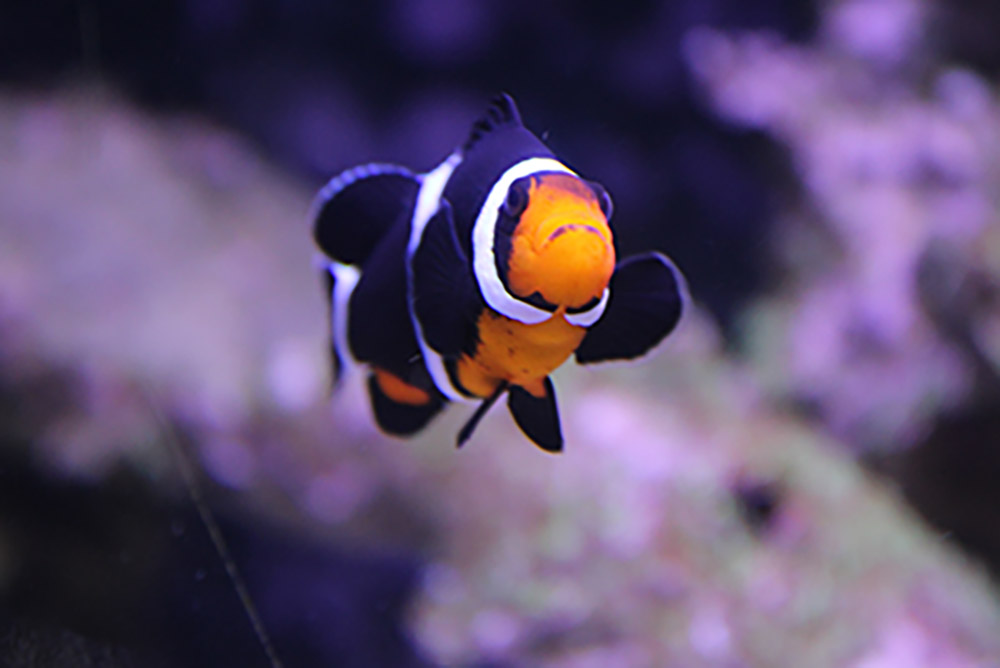
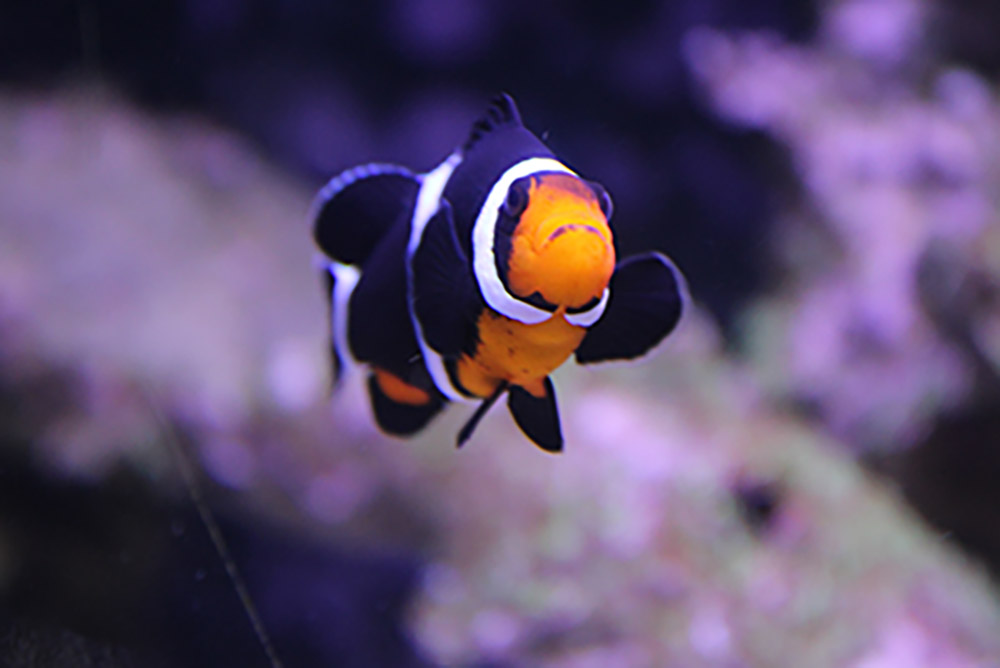
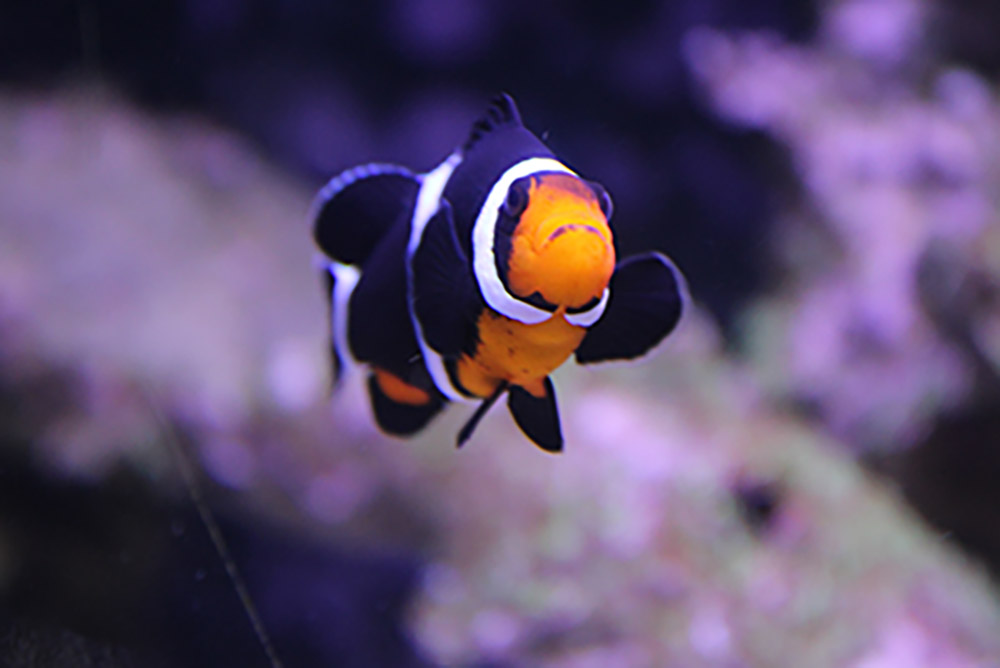

First School Photoshoot
In this project I took pictures at home. This photoshoot shows the beauty you can find when you look close enough even from home. All the photos I took where in the range from in my house to in the backyard.


 


In this project I took pictures at home. This photoshoot shows the beauty you can find when you look close enough even from home. All the photos I took where in the range from in my house to in the backyard.
